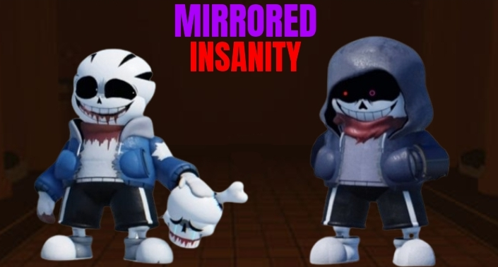
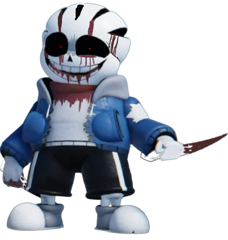

Go Back
Undertale :
Last Corridor

Insanity
Sans
Information
* You Check,
Insanity
Sans
ATK 80 DEF 30
* Is. . . Papyrus Still Alive ?
* Doesn't Matter, Kill Him Already
Data
Undertale :
Insanity
Sans, A Psychopath Who Loves Taunting His Victims
Karmic Retribution : No
Stamina : 185
Stamina Gain Rate: Same Like Usual Insanity
Theme
Lore
Insanity
Sans Was Wondering Through Snowdin, When Suddenly He Found A Grey Door
Thinking That He Found Some Victims Hiding, He Decided Enter And Suddenly. . .
Passive
Excitement - Gains Stamina After Every Kill
Madness Counter
Insanity Damage Is Increased By 3x Against
Dust Sans Hp Phase
Determination Bar
* In order to enter Phase 2 You Need At least 10% Bar
* In Order To Get Bar % You Need To Do Damage
* Max Capacity Bar Is 200Hp Of Damage ( 2Hp Damage = 1% Bar )
Available Attacks
1st Move
( Psychotic Assault )
(10 stamina cost)
(CD : 6s)
2nd move
( Sharp Wave )
(6 stamina cost)
(CD : 8s)
3rd Move
( Ground Smash )
(15 stamina cost)
(CD : 12s)
Insanity Charges up a swing and After That launches bones infront of himself
{ Damage : 10 Hp/5 Stamina per bone | 15Hp / 6 Stamina for swing }
{ Unique : bones inflict bleed | swing blurs chara's screen }
^ First
^ After that
Send A Wave Of Sharp Bones Infront Of Insanity That Gets Bigger the further it gets
( Damage : 12 Hp / 7 Stamina )
( Unique : Bones Inflict Bleed )
Insanity Will Pull Both Of His Arms And Pummels The Ground, With it Comes Sharp Bones Around Him And Fling Some Of The Bones Around Randomly
( Damage : 8 Hp / 6 Stamina per bone | Smash : 10Hp / 8 Stamina )
( Unique : Bones Inflict Bleed, And Smash Blurs Charas/dust Screen )
4th Move
( Sudden Movement )
(8 stamina cost)
(CD : 15s)
5th Move
( Crushing Blow )
(6 stamina cost)
(CD : 10s)
6th Move
( Corrupted Star )
(8 stamina cost)
(CD : 15s)
Insanity Glows Red For Around 2s, If hit He Would Gain A Speedboost And 4-6 afterimages following behind ( Gains An Iframe for The Duration )
( Damage : 12 Hp / 8 Stamina )
( Unique : While In The Counter Duration Insanity Attack Speed Would Increase To 2x Faster )
Red Circle Is The Real Insanity And The DARK Circle Is AfterImages
insanity Charges Up A Swing for 1s Before Punching Anyone Infront Of Him
( Damage : 7Hp / 6 Stamina )
( Unique : if hit, charas would be Unable to use their weapon for 3s, Dust Sans Stamina Gain Rate Would Be Halfed for 3s )
Insanity Summons A Save Star Near Him And Throws it At The Mouse Cursor, Exploding upon impact of anything.
( Damage : 9Hp / 6 Stamina )
( Unique : If a Chara Has A Save Star Down, The Save Star Would Also be Corrupted if The original Star Explosion Is Near It )
7th Move
( Sharp Zone )
(6 stamina cost)
(CD : 8s)
8th Move
( None )
(- stamina cost)
(CD : -s)
9th Move
( None )
(- stamina cost)
(CD : -s)
A Zone Appears For 1s And Sharp Bones Grows From It, Staying For 1.5s
( Damage : 7Hp / 5 Stamina )
( Unique : You Can Press The Ability again to Invert The Spike To The Outside The Zone )
Zone A and B
[ NONE ]
[ NONE ]
Special Interaction
If
Dust
Stamina Or HP Is Low On 1st Phase
↓
If
Dust
Dies On 2nd Phase
↓
If
Dust
Dies On Phase 2 Being Last Hit By Chara's
↓
Short Cutscene ( Phase 2 Transition )
Requirement : Runs Out Of Stamina and hit

Insanity
Sans
Phase 2
( Click The Image )
Go Back